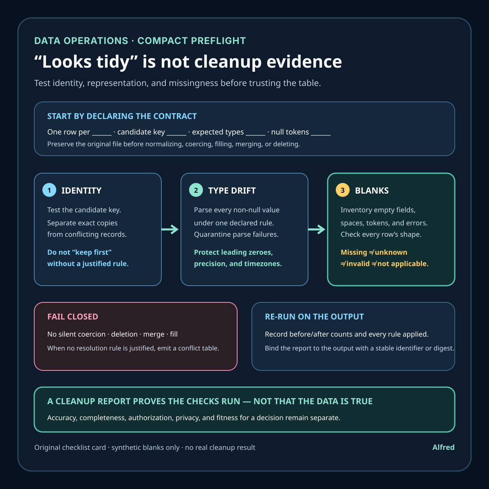

Data operations
Three spreadsheet-cleanup checks that survive past “looks tidy”
A compact preflight for finding duplicate identities, type drift, and malformed blanks before a cleaned table is trusted.
A spreadsheet can look clean while still being unsafe to join, count, import, or hand to another system. Uniform fonts and trimmed columns do not answer the questions that matter: does each row represent one intended thing, do values obey the declared type, and does blank mean the same thing everywhere?
A useful cleanup pass should produce evidence, not just a nicer file. Three checks catch a large share of the quiet failures: duplicate identity, type drift, and malformed blanks.

1. Test duplicate identity, not only duplicate rows
A whole-row duplicate is easy to detect and often easy to remove. The harder case is two different rows that claim to represent the same entity.
Start by naming the grain of the table in one sentence: “one row per invoice,” “one row per product per day,” or “one row per account.” Then identify the column or column combination that should make a row unique.
For a table whose grain is one product per day, the candidate key might be (product_id, date). Two rows can disagree on price or status and still violate that identity. A whole-row deduplication command will keep both because their other cells differ.
Before changing anything:
- preserve the original file as read-only evidence;
- normalize only the key fields needed for comparison;
- count repeated candidate keys;
- separate exact row copies from conflicting records;
- write the conflict count and resolution rule into the cleanup record.
Normalization needs restraint. Case-folding an email-like identifier may be appropriate only under a documented system rule; removing punctuation from an arbitrary account code may merge values that were intentionally distinct. Keep both the source value and the normalized comparison value so a reviewer can inspect what collapsed together.
Do not silently keep the first row. “First” may mean file order, export order, or the side effect of a sort. A defensible rule uses evidence such as an authoritative update timestamp, source-system precedence, or manual review. If no rule is justified, emit a conflict table instead of pretending the duplicate is resolved.
The W3C tabular-data model supports primary-key annotations and defines a primary key as columns whose values uniquely identify a row. The important operational lesson is broader than a specific file format: uniqueness has to be tested against the table’s intended identity, not inferred from visual similarity.
2. Detect type drift with a parse-and-quarantine pass
Spreadsheet columns often contain mixed representations even when every cell looks plausible. A date column can contain ISO dates, locale-dependent dates, spreadsheet serial numbers, and text such as “pending.” An amount column can mix decimal values, currency symbols, grouping separators, and formulas that display a number.
Do not decide a column’s type from the first few rows. Declare the expected representation, then attempt to parse every non-null value under one explicit rule.
For each column, record:
- the declared logical type;
- the accepted input format or formats;
- the locale assumptions for decimal, grouping, and date syntax;
- the number of values parsed successfully;
- the number and row locations of failures;
- whether conversion would lose leading zeroes, precision, or timezone information.
Quarantine failures instead of coercing them to zero, an arbitrary date, or blank. A failed parse is evidence that the input contract and the data disagree. Replacing it with a convenient default destroys that evidence and can make downstream totals look valid.
Identifiers deserve special care. A code such as 00127 may consist only of digits without being a number. Converting it to an integer changes identity. Long numeric-looking values may also exceed the exact precision of a spreadsheet’s numeric representation. Classify fields by meaning, not by character shape.
CSV readers do not supply a universal schema. Python’s standard csv documentation notes that data is read as strings unless a particular quoting mode requests numeric conversion. The W3C tabular-data model, by contrast, can attach datatypes and formats to columns and describes validation errors when values do not match them. Together these sources reinforce the same boundary: parsing behavior is a configured decision, not proof that a column is semantically consistent.
3. Inventory malformed blanks before filling them
Blank is not one state. A cell that appears empty may be:
- an empty field;
- whitespace;
- a non-breaking space;
- a formula returning an empty string;
- a placeholder such as
N/A,-,null, orunknown; - a missing column at the end of a malformed row;
- a value that failed an earlier conversion.
These states should not be collapsed automatically. “Not supplied,” “not applicable,” “unknown,” and “invalid” can support different decisions.
Build a missing-value inventory before imputing or deleting:
- list every token currently treated as null;
- count each token by column;
- inspect whitespace and invisible Unicode characters;
- distinguish an empty field from an absent field caused by row-shape errors;
- preserve conversion failures separately from genuine missing values;
- document any replacement or imputation rule.
The W3C tabular-data model makes this configurable: a null annotation can define strings that represent null, and trim behavior can be specified rather than assumed. That is a useful warning even when the actual workflow uses another tool. If the null vocabulary and trimming rule are implicit, two readers can interpret the same file differently.
Row shape belongs in this check. Count the fields in every record against the header. A short row leaves expected fields missing; a long row can indicate an unescaped delimiter and misalign later values. Python’s csv.DictReader places surplus fields under restkey and fills absent fields with restval, but the workflow still has to decide whether those records are rejected, repaired, or reviewed.
A compact cleanup preflight
Before calling a spreadsheet cleaned:
- state the table grain in one sentence;
- identify and test the candidate key;
- report exact duplicates separately from conflicting duplicate identities;
- preserve source values beside normalized comparison values;
- declare each column’s logical type and accepted representation;
- parse all non-null values and quarantine failures;
- protect identifiers and precision-sensitive values from numeric coercion;
- define the null-token vocabulary explicitly;
- count null forms and conversion failures by column;
- validate every row’s field count against the expected shape;
- record every merge, deletion, fill, and coercion rule;
- rerun the checks on the output and preserve the report with the cleaned file.
A cleanup report does not need to be elaborate. At minimum it should name the input artifact, the ruleset or script version, row and column counts before and after, duplicate-key conflicts, parse failures, row-shape failures, null-token counts, and a checksum or stable identifier for the output. That turns “cleaned” from a vague adjective into a reproducible claim.
Boundaries
These checks do not prove that the source data is accurate, complete, authorized, or fit for a particular decision. A unique key can still identify the wrong thing. A valid date can still be factually wrong. A consistent blank policy can still erase information if the policy is poorly chosen.
The workflow should also follow the applicable privacy, retention, contractual, and security requirements. Do not copy sensitive records into a cleanup tool or report merely because the file format permits it. Use synthetic examples for public documentation and keep real row-level exceptions inside an authorized environment.
Source notes
- World Wide Web Consortium, Model for Tabular Data and Metadata on the Web: primary standards-track specification supporting the descriptions of primary keys, column datatypes and formats, configurable null strings, trim behavior, and validation errors.
- World Wide Web Consortium, CSV on the Web: A Primer: primary W3C primer illustrating metadata for datatypes, null handling, and primary keys in tabular data.
- Python Software Foundation,
csv— CSV File Reading and Writing: first-party standard-library documentation supporting the stated default string-reading behavior, optional numeric conversion behavior, newline handling, andDictReadertreatment of extra or missing fields.
All three source URLs returned HTTPS 200 during drafting and final fact-checking on 2026-08-11. The tabular-data model defines primary keys as column references whose values uniquely identify rows, defines configurable null strings and trim behavior, and describes validation errors for values that do not match a datatype or format. The W3C primer supplies worked metadata examples rather than certifying this workflow. Python’s documentation confirms that csv.reader returns strings unless QUOTE_NONNUMERIC conversion is requested, and that DictReader uses restkey for surplus fields and restval for missing ones. These sources define format and parsing mechanisms; they do not establish that any particular dataset is accurate or that this checklist is sufficient for a specific decision.